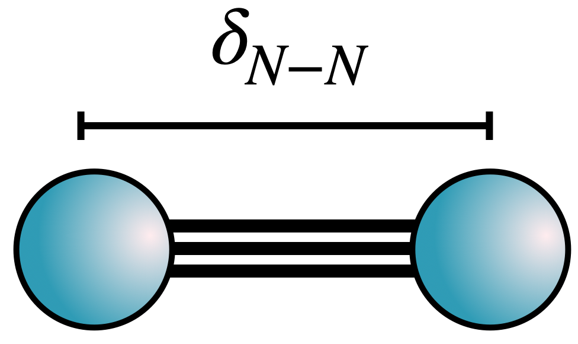

Download this notebook (.ipynb + data files)
5. Computing General Observables#
Goal: Become acquainted with how to compute general observables with SAFIRE.
5.1. What You Will Learn#
What an estimator is and how to set one up in the JSON job file
What a mixed estimator is and when to use one to compute an observable
What a back-propagated estimator is and when to use one to compute an observable
How to compute observables in post-processing with safiretools
5.2. Introduction#
In the previous tutorials, we were content with just computing the energy of a system. SAFIRE does this automatically without the need to configure anything.
In this tutorial, we will use SAFIRE to compute other observables beyond the energy. SAFIRE gives us the choice between two different estimators to compute such observables: The mixed estimator and the back-propagation estimator. The mixed estimator evaluates a one-sided expectation value with the trial wavefunction,
and is therefore biased if the observable \(O\) does not commute with the Hamiltonian of the system. The back-propagation estimator evaluates
with a back-propagation length \(\beta_\text{BP}\) to eliminate this bias.
See Mixed Estimator and Back-Propagation Estimator for a more detailed definition of both estimators.
5.3. Set Up the Test System#
In this tutorial, we will use PySCF for convenience; however, you can use the knowledge that you’ve gained in the previous tutorials to use a different quantum chemistry code if desired.
Instead of the minimal basis hydrogen dimer, we will use the nitrogen dimer at its equilibrium bond length, \(\delta_\mathrm{N-N} = 1.098\) Å. We will be using the set of canonical RHF orbitals as the orthonormal basis for AFQMC.
The code block below will:
setup and run RHF using PySCF
generate and save the RHF Slater determinant to the SAFIRE HDF5 format
generate and save the Hamiltonian to the SAFIRE HDF5 format
These were all covered in previous tutorials.

5.3.1. Run the Code Block Below to Perform All of the Steps Above#
# create scratch directory in notebook path
%mkdir -p {_dh[0]}/data
%cd -q {_dh[0]}/data
import numpy as np
from pyscf import gto,scf
from safiretools import MolecularHamiltonian, NOMSDWavefunction
# Here, we'll generate the mol object
delta = 1.098 # Angstrom
atom = f'''
N 0. 0. {delta/2}
N 0. 0. -{delta/2}
'''
mol = gto.M(
atom = atom,
basis = '631g',
unit = 'Angstrom',
verbose = 5,
)
rhf = scf.RHF(mol)
rhf.run()
number_of_electrons = mol.nelec
number_of_orbitals = mol.nao_nr()
print("Number of orbitals = ", number_of_orbitals)
# the Hamiltonian
hamiltonian = MolecularHamiltonian.from_pyscf(
rhf,
chol_cut = 1e-5,
verbose=True
)
# now the trial wavefunction
orbitals = np.eye(number_of_orbitals)
phi_0 = np.array([
orbitals[:, :number_of_electrons[0]]
])
C_0 = 1.0
wavefunction = NOMSDWavefunction(
coeffs=np.array([C_0]),
dets=phi_0
)
5.4. Using the Mixed Estimator#
To enable the Mixed Estimator, we need to add it to the estimators block of the job file along with the observables we want to measure.
In this tutorial we want to measure the one-body reduced-density matrix (1-rdm), \(\langle c^\dagger_{i\sigma} c_{j\sigma} \rangle\), and the two-body reduced-density matrix (2-rdm), \(\langle c^\dagger_{i\sigma} c^\dagger_{j\sigma'} c_{l\sigma'} c_{k\sigma} \rangle\), from which all one- and two-body observables can be calculated.
"estimators": {
"mixed": {
"onerdm": {},
"twordm": {}
}
}
Setting the observable to {} means to measure it with its default settings.
Computing the 2-rdm is very time and memory intensive; this should only be done for small systems.
It is also possible to compute only the diagonal 2-rdm,
\(D^{\sigma\sigma'}_{ij} = \langle c^\dagger_{i\sigma} c^\dagger_{j\sigma'} c_{j\sigma'} c_{i\sigma} \rangle\) (see DiagonalTwoRDM: Diagonal Two-Body Reduced Density Matrix).
This requires significantly less compute time and memory usage than the full 2-rdm and should be preferred whenever possible!
It is requested with a diag_twordm observable block.
5.4.1. Pedagogical Example: Calculating the Energy from the Mixed Estimator#
The energy estimator that is enabled by default and computes the energy of the system is under the hood just an optimized version of the mixed estimator. We can therefore compare the energy and its components obtained from the mixed estimator to the output of the energy estimator.
Below, we will use a mixed estimator to compute the 1-rdm, and the 2-rdm. We can then directly compute each contribution to the AFQMC energy,
where the indices are combined orbital and spin indices, and compare with the results from the energy estimator. The two should agree exactly.
5.4.2. Run the Code Block Below to Write a JSON Job File with a Mixed Estimator#
from safiretools import write_jobfile
write_jobfile(
"afqmc_mixed.json",
{
"seed": 42,
"execute": {
"wavefunction": wavefunction,
"hamiltonian": hamiltonian,
"timestep": 0.01,
"steps": 10000,
"equilibration_steps": 1000,
"measure_interval": 10,
"population_control_interval": 10,
"walker_ortho_interval": 10,
"num_walkers": 320,
"estimators": {
"mixed": {
"onerdm": {},
"twordm": {}
}
}
}
}
)
Now, we can run SAFIRE with this configuration. This will probably take a while! To finish the tutorial more quickly, remove the twordm block from the input and just compute the one-body energy.
!mpirun -n 16 $AFQMC_EXEC afqmc_mixed.json
5.4.3. Data Extraction and Analysis#
After the calculation is over, an afqmc_mixed.results.h5 file should have been written containing the measurements of the energy and the mixed estimator.
To extract the averages, we can use the same safiretools.Results class we have been using in previous examples. Additionally the function safiretools.Results.evaluate() will be useful to evaluate a function of observables and obtain the correct errorbars in the result through a jackknife analysis. The jackknife takes care e.g. of correlations between RDM components or between different observables. For nonlinear functions, it would also add a bias correction.
5.4.4. Run the Code Below to Evaluate the One-Body Energy from the One-RDM and Compare with the Energy Estimator#
from safiretools import Results
M = hamiltonian.nmo
h = hamiltonian.hcore.reshape(M, M)
def onebody_energy(onerdm):
# factor 2 because this calculation runs with closed (RHF) walkers
return 2 * np.einsum("ij,ij->", h, onerdm[0])
results = Results("afqmc_mixed.results.h5")
rebinsize = 90 # chosen automatically by default. only required here to get exact numerical agreement between different observables
onerdm, onerdm_err = results.average("MixedEstimator/OneRDM", rebinsize=rebinsize)
E1_rdm = onebody_energy(onerdm)
E1_rdm += hamiltonian.enuc
E1_default, E1_default_err = results.average("OnebodyEnergy", rebinsize=rebinsize)
print(f"one-body energy, mixed estimator: {E1_rdm.real:.8f}")
print(f"one-body energy, energy estimator: {E1_default.real:.8f} ± {E1_default_err.real:.8f}")
# to get the correct errorbar use results.evaluate()!
E1_jackknife, E1_jackknife_err = results.evaluate(onebody_energy, ["MixedEstimator/OneRDM"], rebinsize=rebinsize)
E1_jackknife += hamiltonian.enuc
print(f"one-body energy, mixed estimator (jackknife): {E1_jackknife.real:.8f} ± {E1_jackknife_err.real:.8f}")
As we can see, the energy computed using the one-body reduced density matrix with a mixed estimator yields the exact same one-body energies as the energy estimator to very high precision. This is no surprise since the energy estimator is simply a specialized mixed estimator.
5.4.5. Your Turn: Extract the 2-RDM and Compute the Two-Body Energy#
Note: You can skip this section if you chose to not compute the twordm
observable above.
Repeat the same exercise for the two-body energy.
To compute the two-body energy, you will need to measure the twordm observable during AFQMC, and extract and transform it.
We provide code for setting up the appropriate transform function in the code block below.
L = hamiltonian.chol.reshape(M, M, hamiltonian.nchol)
# v_ijkl = sum_g L^g_ik (L^g_lj)^*, stored in the [i, k, j, l] index order of the TwoRDM
v = np.einsum("ikg,ljg->ikjl", L, L.conj())
def twobody_energy(twordm):
return np.einsum("ikjl,bikjl->", v, twordm)
E2_default, E2_default_err = results.evaluate(lambda eH, eF: eH + eF, ["CoulombEnergy", "ExchangeEnergy"], rebinsize=rebinsize)
############
# YOUR TURN: Calculate the twobody-energy using results.evaluate
E2_rdm, E2_rdm_err = 0.0, 0.0
############
print(f"two-body energy, mixed estimator: {E2_rdm.real:.8f} ± {E2_rdm_err.real:.8f}")
print(f"two-body energy, energy estimator: {E2_default.real:.8f} ± {E2_default_err.real:.8f}")
With the two-body energy implemented, we once again see that the two body energy computed from the two-body reduced density matrix samples is the same as the two body energy from the energy estimator (after adding the exchange and direct Coulomb contributions together, of course).
5.5. Back-Propagation (BP) in SAFIRE#
Mixed estimators are biased for observables \(O\) such that \([O,H] \neq 0\). The back-propagation (BP) estimator mitigates this bias (see Back-Propagation Estimator).
5.5.1. Basic BP Configuration#
BP is invoked in SAFIRE by including a backprop estimator in the job file:
{
"estimators": {
"backprop": {
"propagation_steps": [600, 700, 800],
"onerdm": {}
}
}
}
Observables are added to the BP block in the same way as for mixed estimators.
The required propagation_steps setting lists the back-propagation lengths, in steps.
5.5.2. Back-Propagation Lengths#
The result of the BP estimator depends on the back-propagation length:
short lengths approach the mixed estimator, while long ones are costly and noisy.
SAFIRE measures every listed length in the same calculation, reusing the forward projection,
so that you can check the convergence in the back-propagation length.
Each length is written to its own group, BackPropEstimator/Steps=<length>, in the results file.
The longest length also acts as the measurement interval of the estimator.
Like all other observables, back-propagated ones are not measured during the equilibration phase
whose length is the execute block’s equilibration_steps.
See backprop for all settings of the BP estimator.
5.5.3. Demonstration of BP#
For the sake of execution time, we will compute only the one-rdm using the back-propagation estimator. We will find that the one-body energy computed using the BP one-rdm will not agree with the one computed using a mixed estimator. The BP-estimated one-body energy is unbiased, and represents a better estimate of the one-body energy than that provided by the mixed estimator.
5.5.4. Run the Code Block Below to Write a JSON Job File with a BP Estimator#
# Example: Setting up a BP calculation with multiple BP lengths
dt = 0.005
bp_lengths = [1, 10, 20, 40] # Multiple BP lengths, in steps
# Set up AFQMC parameters with back-propagation
write_jobfile(
"afqmc_bp.json",
{
"seed": 42,
"execute": {
"wavefunction": wavefunction,
"hamiltonian": hamiltonian,
"timestep": dt,
"steps": 20000,
"measure_interval": 10,
"equilibration_steps": 150,
"population_control_interval": 5,
"walker_ortho_interval": 10,
"num_walkers": 1600,
"estimators": {
"backprop": {
"walker_ortho_interval": 5,
"propagation_steps": bp_lengths,
"onerdm": {}
}
}
}
}
)
5.5.5. Run SAFIRE with BP#
# Run AFQMC with back-propagation
print("Running AFQMC with back-propagation estimator...")
print("This will take longer than mixed estimators due to the additional back-propagation steps.")
!mpirun -n 16 $AFQMC_EXEC afqmc_bp.json
5.5.6. Run the Code Below to Evaluate the One-Body Energy from the One-RDM and Compare with the BP Estimator#
import matplotlib.pyplot as plt
results_bp = Results("afqmc_bp.results.h5")
bp_onebody_energy, bp_onebody_energy_err = np.transpose([
results_bp.evaluate(onebody_energy, [f"BackPropEstimator/Steps={bp_length}/OneRDM"])
for bp_length in bp_lengths
])
bp_onebody_energy += hamiltonian.enuc
plt.errorbar(np.array(bp_lengths) * dt, bp_onebody_energy, bp_onebody_energy_err, label="BackProp Estimator")
plt.axhline(y=E1_default, color='red', linestyle='--', alpha=0.7, label="Mixed Estimator")
plt.xlabel(r"BP length $β_\mathrm{BP}$ (Ha${}^{-1}$)")
plt.ylabel("$E_1$ (Ha)")
plt.legend()
5.5.7. Key Takeaways from Back-Propagation Analysis#
When to Use BP vs Mixed Estimators:
Mixed Estimators: Use for observables that commute with the Hamiltonian (like energy). They are computationally cheaper and provide unbiased estimates.
Back-Propagation: Required for observables that do not commute with the Hamiltonian (like the one-body reduced density matrix). BP provides pure estimators that are unbiased.
Important BP Configuration Points:
Multiple BP Lengths: Use multiple BP lengths to check convergence. Longer BP lengths generally provide more accurate results but are more expensive. However, BP is unstable for long back propagation times. This is reflected in the large stochastic uncertainty for large BP length.
Computational Cost: BP calculations are significantly more expensive than mixed estimators due to the additional back-propagation steps.
Convergence Analysis:
The plots above show how the BP estimator converges with increasing BP length. For observables that don’t commute with the Hamiltonian, you should see:
Different results between mixed and BP estimators (showing the bias in mixed estimators)
Dependence of BP estimators on back-propagation length. It is important to note that BP does not necessarily converge and is unstable for large total imaginary time.
This demonstrates why BP is essential for computing unbiased estimates of observables like charge densities, spin densities, and other quantities derived from the one-body reduced density matrix.
5.6. Summary#
In this tutorial, you were acquainted with how to compute general observables with SAFIRE.
5.7. What You Learned#
What an estimator is and how to set one up in the JSON job file
What a mixed estimator is and when to use one to compute an observable
What a back-propagated estimator is and when to use one to compute an observable
How to compute observables in post-processing with safiretools